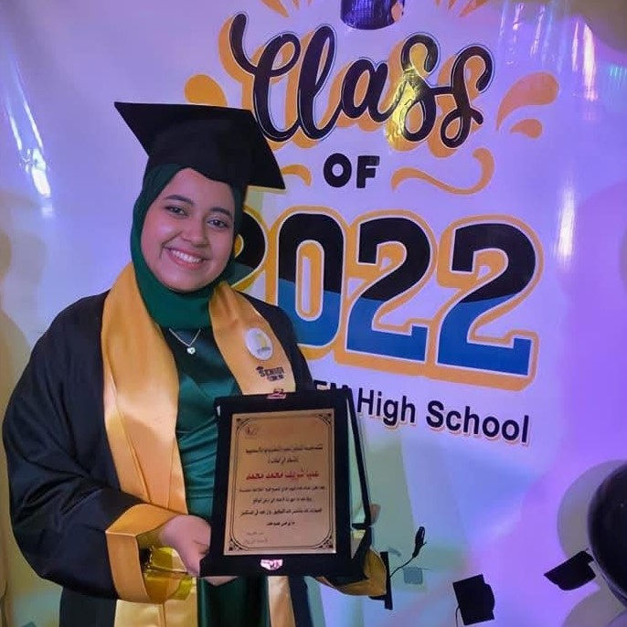
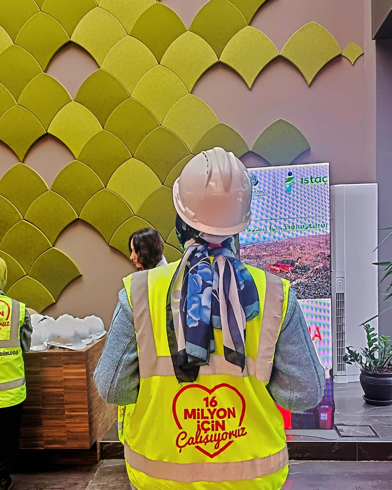
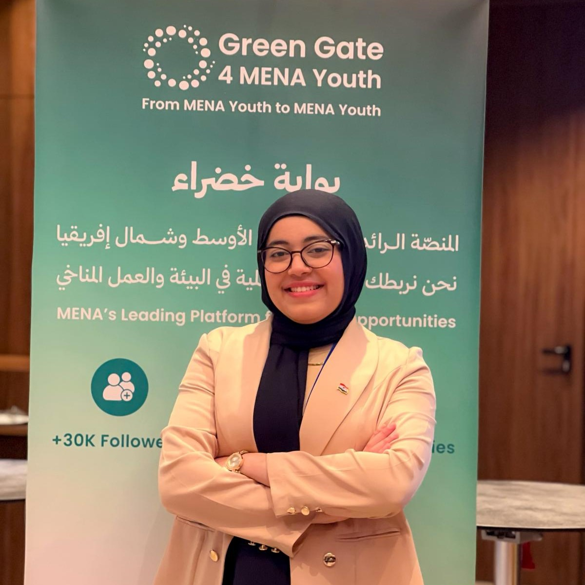

The path so far.
The Foundation
Graduated from Ismailia STEM High School — a science-first education that ignited a lifelong curiosity about engineering and the natural world. Completed 3 Capstone projects tackling real environmental challenges facing Egypt, from water scarcity to renewable energy. The beginning of a pattern: learning by solving.
First Steps Into Impact
Joined the New York Academy of Sciences' Junior Academy and 1000 Girls 1000 Futures program, and participated in the EducationUSA Academy Connects - Application Ready program by University of Colorado Boulder in the US. Named Best Fellow at Emonovo, logging 590+ working hours.
Crossing Borders
Moved to Istanbul. Mastered Turkish through the TÖMER program at Istanbul University-Cerrahpaşa in less than 8 months. A bold leap that proved cultural immersion accelerates growth like nothing else.
Engineering Meets Advocacy
Enrolled in Environmental Engineering at Istanbul University-Cerrahpaşa — the technical foundation that gives her advocacy real weight. As her academic roots deepened, so did her leadership: from Operations to Chief Operating Officer at Green Gate 4 MENA Youth, and now Head of Programs & Impact. A natural progression from doing the work to shaping its direction.
The Global Stage
Represented Egypt as Youth Delegate at COY19 — the 19th UN Climate Change Conference of Youth — in Baku, Azerbaijan. One of the loudest rooms in global climate politics for youth, and she had a seat at the table.
Ambassador, Speaker, Engineer
Appointed Climate Envoy by Turkey's Ministry of Environment. Keynote speaker at LCOY Türkiye. Intenal Operations Coordinator at GreenX MENA. Lab intern in wastewater treatment. ALF training in Euro-Mediterranean climate advocacy. A year of convergence.
Erasmus+ Exchange — Hungary
Currently on exchange at Ludovika University of Public Service in Hungary, deepening expertise in Water Science and Environmental Engineering. The story continues.

STEM Graduation · 2022
Engineering in Action
Green Gate 4 MENA Youth Climate Envoy · 2025
Climate Envoy · 2025